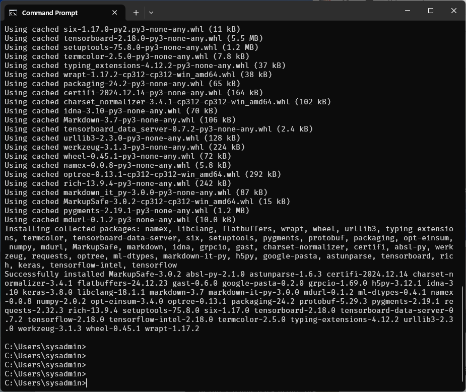

Section 1 Setup Environment
Install Native Python
Step 1. Downloading the pthon installer
1. Go to official https://www.python.org/downloads/
2. Download the latest or previous versions of Python for Windows 64bit (3.13,3.12), including installers

- After the installer is downloaded, double-click the
.exefilepython-3.13.1-amd64.exe, python-3.12.8-amd64.exe - Select the install launcher for all user, eanbles all users for the computer to access to the python
- Select the python.exe to PATH checkbox, which enables users to launch python from command line
Python Directory
Before you start, learning about python directory:
locate the Python installation directory on your system. The following directories are examples of the default directory paths:
C:\Program Files\Python313: if you selected (User admin priviledges) Install for all users during installation, then the directory will be system wide
C:\Users\"username"\AppData\Local\Programs\Python\Python313: if you didn’t select Install for all users during installation, then the directory will be in the Windows user path
Discuss: Python Environment:

Start Install process
- Installing

Successfull install
Setup python environment

Verify python
we can verify python installation by command line. Start to use command line from windows. open windows cmd or powershell. run command belows

Install package with command pyhon -m pip
from output below there is ERROR: say Could not find a version that satisfies the requirement tensorflow version
let goto https://pypi.org/project/tensorflow/
Interesting we can install numpy package:
The error occurs because TensorFlow currently does not support Python 3.13. TensorFlow's development cycles typically lag behind the latest Python versions, and support is usually added after thorough testing.

Next Step: we reinstall python 3.12
we want to install tensorflow again. We will install tersorflow to python 3.12. Let download python 3.12:

continue process installation:


Success install:

Let Change python environment to python312:
Verify new python version and install tensorflow again:
we will see the result: Successfully install package:

Create python project
create normal folder and change folder to python project with environment
- create folder with
mkdircommand and move to folder withcdcommand - create python virtal enviroment with command
python -m venv myvenvin project directory

- activate pthon envionment with
.\myenv\Scripts\activate.bat
we will see the indicator(myenv)whick show the corrent environment we reside.
Discuss: install package in environment
isolation:

Key Python Package for DataScience
key packages in Python for Data Science and Machine.
1. Pandas
2. Numpy
3. Scikit Learn
4. Matplotlib
5. Seaborn
We have a foundation in Python, so it's essential to explore various Python packages such as numpy, pandas, and matplotlib, as well as Python modules like math, random, and datetime. In the Python ecosystem, both modules and packages serve as tools to organize and structure code based on different purposes.

Difference Between Packages and Modules in Python
| Aspect | Module | Package |
|---|---|---|
| Definition | A single Python file containing code (functions, classes, etc.). | A collection of modules organized in a directory with an __init__.py file. |
| Structure | A .py single file. |
A directory containing an __init__.py file and one or more modules. |
| Purpose | To group related code together. | To organize multiple modules into a hierarchical structure. |
| Example | math, random, datetime |
numpy, pandas, matplotlib |
| Use Case | Lightweight organization for smaller functionality. | Manage larger projects with complex dependencies and modularity. |
| How to import | import module_name | import package_name.module_name |
Key Concepts and Purposes
Modules:
- Provide a way to reuse code in a single file.
- Focus on a specific functionality (e.g., math operations, random number generation).
- Example: Importing a single module:
Packages:
- Group related modules together to create a larger, well-organized library.
- Enable a hierarchical structure for large-scale applications.
- Example: Importing a module from a package: